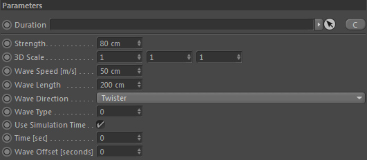
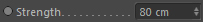
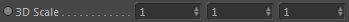
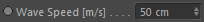
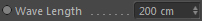
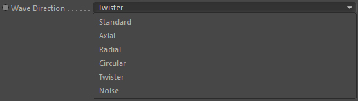
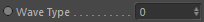
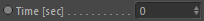
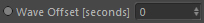

Parameters
Parameters

Duration

Takes a Duration node in order to define the length of the force emission. This node is optional.
Strength

The overall strength of the resulting force.
3D Scale

Scales the resulting force in space.
Wave Speed [m/s]

The speed of the wave in meter per second.
Wave Length

The length of a wave before the next wave appears.
Wave Direction

The main direction of the force waves generated.
Wave Type

The wave type defines how the waves forming in the main wave direction behave. They can alternate in direction at different intervals and speed.
Use Simulation Time
Automatically use the simulation time of the framework to determine the current wave time. If unchecked the Time [sec] value is used instead.
Time [sec]

Lets you define manually the point of time used. Only available if "Use Simulation Time" is deactivated.
The time is given in seconds.
Wave Offset [seconds]

Lets you add a temporal offset of the wave time to start with a different force wave state